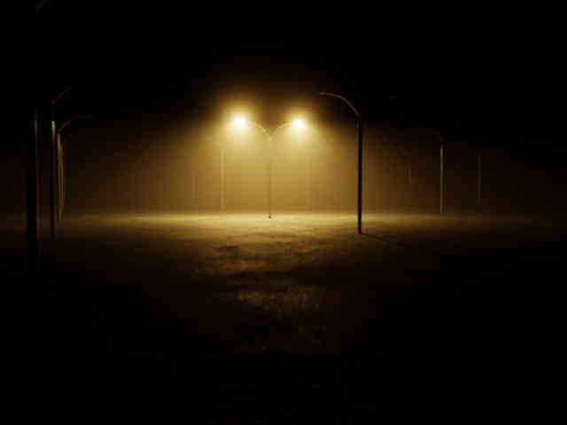
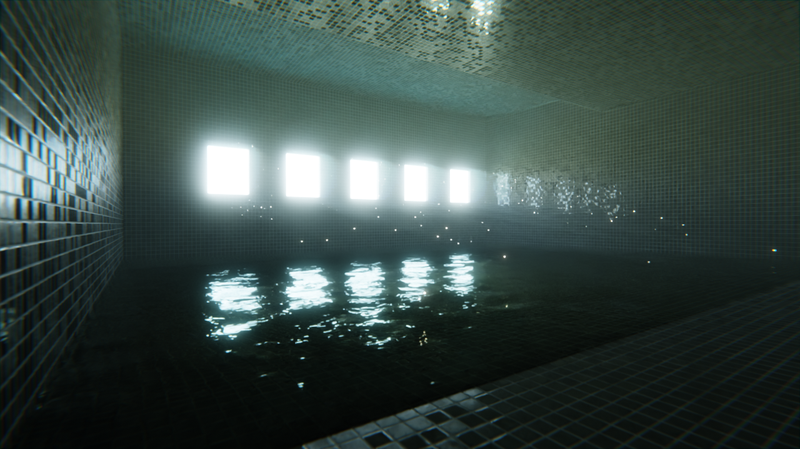
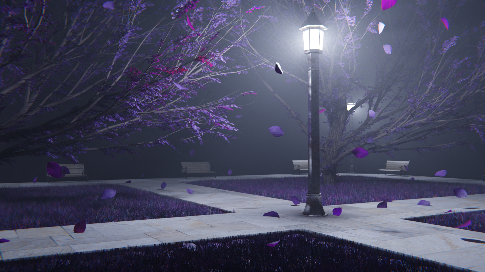
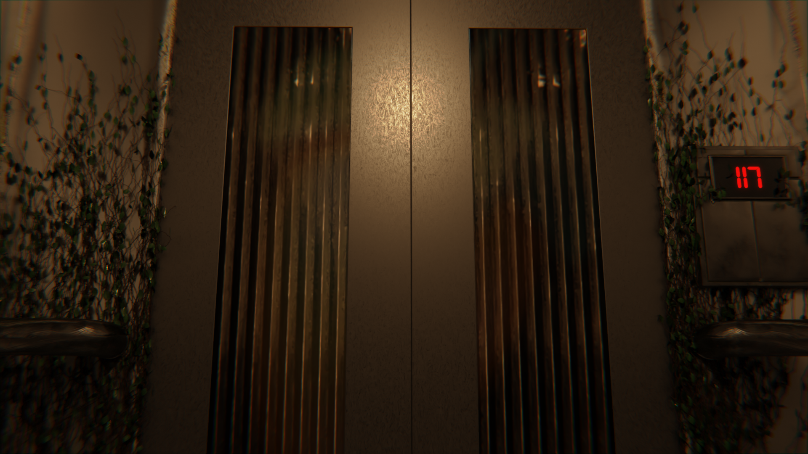
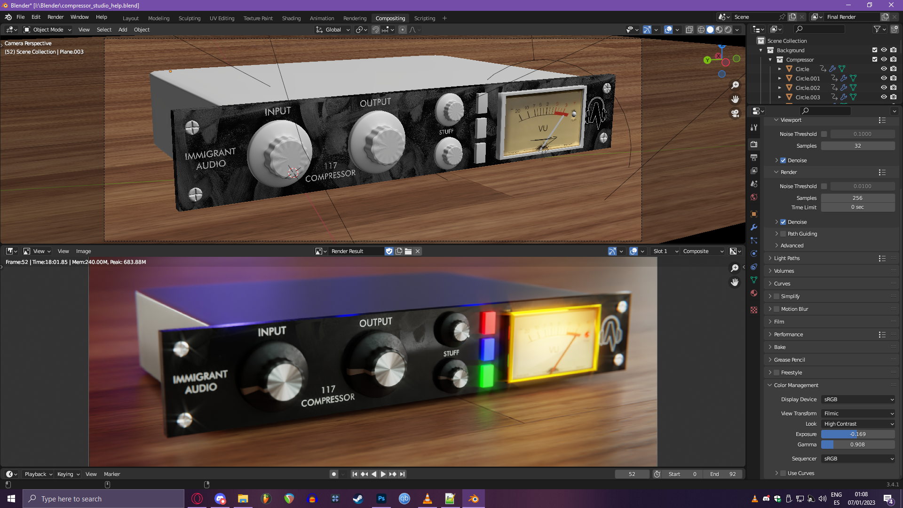
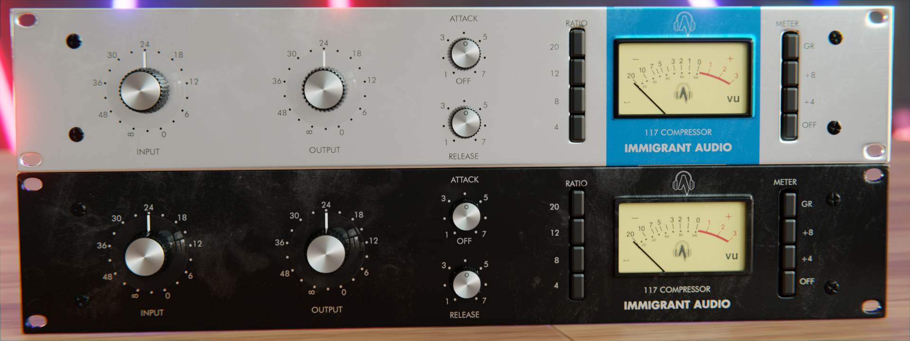
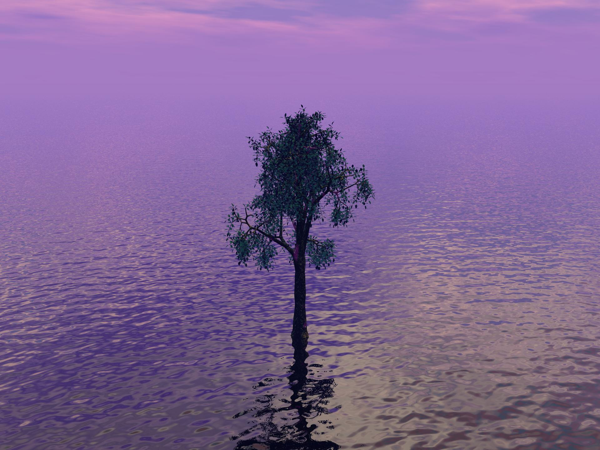

I like to make my PC suffer
Usually when I get bored of producing a song I jump in Blender and try to do some 3D stuff.
Now, I suck at modelling so I just make weird scenes and that kinds of shit
Some time ago I was into a bunch of liminal stuff because it made me feel weird and nostalgic
so one day I wanted to make some kind of "liminal parking lot" and I did this... thing?

It feels ominous and I like it. Will probably make more of these in the future
So I was playing this GMOD map and I found a room that looked interesting to me.
It kinda resembled one of those "liminal pool" renders you usually see on youtube or reddit.

Modelling this was a pain in the ass, I tried so hard to make a good water simulation but I just coudln't.
The water isn't real, it's a glossy plane with a noise texture as displacement map. Looks convincing enough.
I was playing in GMOD (again) and found a scene that I really liked so I decided to make this...
Weird fantasy park that is purple for some reason?

I never got to finish this one, ran out of ideas. I'll probably continue it in the future
This one was a pain in the ass to make and it isn't even complete yet.
I wanted to make some kind of creepy old elevator scene for a game
but as you can see I failed horribly lmao

I'll probably try to finish it, or at least improve it in the future.
I usually like the renders people make for VSTs so I decided to make one myself.
This one is based off the 1176 compressor which is popular (and expensive) as fuck.

It turned out fucking horrible horrible looking lmao
I ended up using this one as Immigrant Audio's 117 COMPRESSOR
There's also this other one I did 2 or 3 months later

Can you believe it actually looks usable?
I've recently gotten interested in those very old 90s CGI scenes.
I don't know why, they just look so uncannily cool! Tried making one myself and...

well it doesnt look cool at all but at least the feeling is still there
There's also this other version done in Bryce 7

And this depressing ass tree my friend LeFidoot used for one of his album arts

And this weird apocalyptic musical video thing that was inspired by a dream I had

I'll probs keep making more of these in the future
That's it. I just wasted your time by making you look at my half-assed renders.
Please don't throw chairs at me, someone from my class threw a chair lit on fire at me and it wasn't a good experience for the love of GOD PLEASE DON'T TTHORW CHAIRS AT ME TNEIRHNE RTKIANBE IEFKGJNGOIHNAJBOOFDHN
That's enough, take me home please...